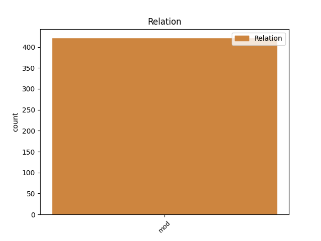
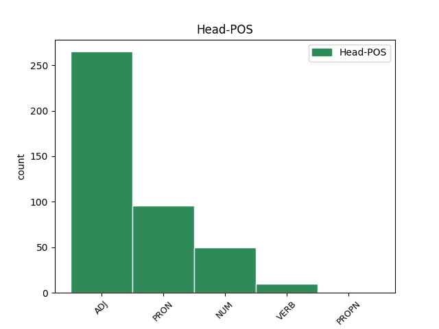
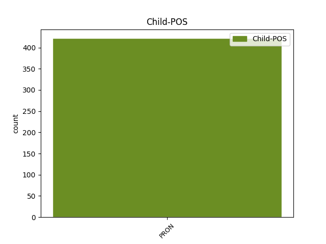

Distribution of features within this leaf



Agreement Rules sorted by frequency.
- When the dependent token is the modifer(mod) of the head token, and the head token is ADJ and the dependent token is PRON.
1 contrarium _ _ _ _ 0 _ _ _
2 igitur _ _ _ _ 0 _ _ _
3 resistit _ _ _ _ 0 _ _ _
4 agenti _ _ _ _ 0 _ _ _
5 , _ _ _ _ 0 _ _ _
6 inquantum _ _ _ _ 0 _ _ _
7 impedit _ _ _ _ 0 _ _ _
8 potentiam _ _ _ _ 0 _ _ _
9 ab _ _ _ _ 0 _ _ _
10 actu _ _ _ _ 0 _ _ _
11 in _ _ _ _ 0 _ _ _
12 quem _ _ _ _ 0 _ _ _
13 intendit _ _ _ _ 0 _ _ _
14 reducere _ _ _ _ 0 _ _ _
15 agens _ _ _ _ 0 _ _ _
16 , _ _ _ _ 0 _ _ _
17 sicut _ _ _ _ 0 _ _ _
18 ignis _ _ _ _ 0 _ _ _
19 intendit _ _ _ _ 0 _ _ _
20 reducere _ _ _ _ 0 _ _ _
21 materiam _ _ _ _ 0 _ _ _
22 aquae _ _ _ _ 0 _ _ _
23 in _ _ _ _ 0 _ _ _
24 actum _ _ _ _ 0 _ _ _
25 sibi se PRON F1|grn1|casC|gen1 Case=Dat|Degree=Pos|Gender=Masc|Number=Sing|PronType=Prs|Reflex=Yes 26 mod _ _
26 similem similis ADJ C1|grn1|casD|gen1 Case=Acc|Degree=Pos|Gender=Masc|Number=Sing 0 _ _ _
27 , _ _ _ _ 0 _ _ _
28 sed _ _ _ _ 0 _ _ _
29 impeditur _ _ _ _ 0 _ _ _
30 per _ _ _ _ 0 _ _ _
31 formam _ _ _ _ 0 _ _ _
32 et _ _ _ _ 0 _ _ _
33 dispositiones _ _ _ _ 0 _ _ _
34 contrarias _ _ _ _ 0 _ _ _
35 , _ _ _ _ 0 _ _ _
36 quibus _ _ _ _ 0 _ _ _
37 quasi _ _ _ _ 0 _ _ _
38 ligatur _ _ _ _ 0 _ _ _
39 potentia _ _ _ _ 0 _ _ _
40 ne _ _ _ _ 0 _ _ _
41 reducatur _ _ _ _ 0 _ _ _
42 in _ _ _ _ 0 _ _ _
43 actum _ _ _ _ 0 _ _ _
44 . _ _ _ _ 0 _ _ _
1 si _ _ _ _ 0 _ _ _
2 autem _ _ _ _ 0 _ _ _
3 secundum _ _ _ _ 0 _ _ _
4 aliquid aliquis PRON F1|grn1|casD|gen3 Case=Acc|Degree=Pos|Gender=Neut|Number=Sing|PronType=Ind 0 _ _ _
5 sui se PRON F1|grn1|casB|gen3 Case=Gen|Degree=Pos|Gender=Neut|Number=Sing|PronType=Prs|Reflex=Yes 4 mod _ _
6 sit _ _ _ _ 0 _ _ _
7 forma _ _ _ _ 0 _ _ _
8 , _ _ _ _ 0 _ _ _
9 id _ _ _ _ 0 _ _ _
10 quod _ _ _ _ 0 _ _ _
11 est _ _ _ _ 0 _ _ _
12 forma _ _ _ _ 0 _ _ _
13 dicimus _ _ _ _ 0 _ _ _
14 animam _ _ _ _ 0 _ _ _
15 , _ _ _ _ 0 _ _ _
16 et _ _ _ _ 0 _ _ _
17 id _ _ _ _ 0 _ _ _
18 cuius _ _ _ _ 0 _ _ _
19 est _ _ _ _ 0 _ _ _
20 forma _ _ _ _ 0 _ _ _
21 dicimus _ _ _ _ 0 _ _ _
22 primum _ _ _ _ 0 _ _ _
23 animatum _ _ _ _ 0 _ _ _
24 , _ _ _ _ 0 _ _ _
25 ut _ _ _ _ 0 _ _ _
26 supra _ _ _ _ 0 _ _ _
27 dictum _ _ _ _ 0 _ _ _
28 est _ _ _ _ 0 _ _ _
29 . _ _ _ _ 0 _ _ _
1 et _ _ _ _ 0 _ _ _
2 tunc _ _ _ _ 0 _ _ _
3 requiruntur _ _ _ _ 0 _ _ _
4 duo _ _ _ _ 0 _ _ _
5 genitivi _ _ _ _ 0 _ _ _
6 , _ _ _ _ 0 _ _ _
7 quorum qui PRON F1|grn1|casK|gen1 Case=Gen|Degree=Pos|Gender=Masc|Number=Plur|PronType=Rel 8 mod _ _
8 unus unus NUM F1|grn1|casA|gen1 Case=Nom|Degree=Pos|Gender=Masc|Number=Sing|NumType=Card 0 _ _ _
9 significet _ _ _ _ 0 _ _ _
10 formam _ _ _ _ 0 _ _ _
11 , _ _ _ _ 0 _ _ _
12 et _ _ _ _ 0 _ _ _
13 alius _ _ _ _ 0 _ _ _
14 determinationem _ _ _ _ 0 _ _ _
15 formae _ _ _ _ 0 _ _ _
16 , _ _ _ _ 0 _ _ _
17 ut _ _ _ _ 0 _ _ _
18 si _ _ _ _ 0 _ _ _
19 dicatur _ _ _ _ 0 _ _ _
20 , _ _ _ _ 0 _ _ _
21 petrus _ _ _ _ 0 _ _ _
22 est _ _ _ _ 0 _ _ _
23 magnae _ _ _ _ 0 _ _ _
24 virtutis _ _ _ _ 0 _ _ _
25 , _ _ _ _ 0 _ _ _
26 vel _ _ _ _ 0 _ _ _
27 etiam _ _ _ _ 0 _ _ _
28 requiritur _ _ _ _ 0 _ _ _
29 unus _ _ _ _ 0 _ _ _
30 genitivus _ _ _ _ 0 _ _ _
31 habens _ _ _ _ 0 _ _ _
32 vim _ _ _ _ 0 _ _ _
33 duorum _ _ _ _ 0 _ _ _
34 genitivorum _ _ _ _ 0 _ _ _
35 , _ _ _ _ 0 _ _ _
36 ut _ _ _ _ 0 _ _ _
37 cum _ _ _ _ 0 _ _ _
38 dicitur _ _ _ _ 0 _ _ _
39 , _ _ _ _ 0 _ _ _
40 vir _ _ _ _ 0 _ _ _
41 sanguinum _ _ _ _ 0 _ _ _
42 est _ _ _ _ 0 _ _ _
43 iste _ _ _ _ 0 _ _ _
44 , _ _ _ _ 0 _ _ _
45 idest _ _ _ _ 0 _ _ _
46 effusor _ _ _ _ 0 _ _ _
47 multi _ _ _ _ 0 _ _ _
48 sanguinis _ _ _ _ 0 _ _ _
49 . _ _ _ _ 0 _ _ _
1 quod _ _ _ _ 0 _ _ _
2 etiam _ _ _ _ 0 _ _ _
3 in _ _ _ _ 0 _ _ _
4 somniis _ _ _ _ 0 _ _ _
5 patet _ _ _ _ 0 _ _ _
6 , _ _ _ _ 0 _ _ _
7 in _ _ _ _ 0 _ _ _
8 quibus _ _ _ _ 0 _ _ _
9 , _ _ _ _ 0 _ _ _
10 etsi _ _ _ _ 0 _ _ _
11 sit _ _ _ _ 0 _ _ _
12 aliqua _ _ _ _ 0 _ _ _
13 praesignatio _ _ _ _ 0 _ _ _
14 futurorum _ _ _ _ 0 _ _ _
15 , _ _ _ _ 0 _ _ _
16 non _ _ _ _ 0 _ _ _
17 tamen _ _ _ _ 0 _ _ _
18 quicumque _ _ _ _ 0 _ _ _
19 videns _ _ _ _ 0 _ _ _
20 somnia _ _ _ _ 0 _ _ _
21 , _ _ _ _ 0 _ _ _
22 eorum is PRON F1|grn1|casK|gen3 Case=Gen|Degree=Pos|Gender=Neut|Number=Plur|PronType=Dem,Prs 23 mod _ _
23 significata significo VERB J2|modM|tem4|grp1|casM|gen3 Aspect=Perf|Case=Acc|Degree=Pos|Gender=Neut|Number=Plur|Tense=Past|VerbForm=Part|Voice=Pass 0 _ _ _
24 intelligit _ _ _ _ 0 _ _ _
25 . _ _ _ _ 0 _ _ _
1 alii _ _ _ _ 0 _ _ _
2 vero _ _ _ _ 0 _ _ _
3 , _ _ _ _ 0 _ _ _
4 ut _ _ _ _ 0 _ _ _
5 aristoteles _ _ _ _ 0 _ _ _
6 et _ _ _ _ 0 _ _ _
7 commentator commentator PROPN C1|grn1|casA|gen1 Case=Nom|Degree=Pos|Gender=Masc|Number=Sing 0 _ _ _
8 ejus is PRON F1|grn1|casB|gen1|vgr1 Case=Gen|Degree=Pos|Gender=Masc|Number=Sing|PronType=Dem,Prs 7 mod _ SpaceAfter=No
9 , _ _ _ _ 0 _ _ _
10 qui _ _ _ _ 0 _ _ _
11 ponunt _ _ _ _ 0 _ _ _
12 formas _ _ _ _ 0 _ _ _
13 alias _ _ _ _ 0 _ _ _
14 materiales _ _ _ _ 0 _ _ _
15 ex _ _ _ _ 0 _ _ _
16 potentia _ _ _ _ 0 _ _ _
17 materiae _ _ _ _ 0 _ _ _
18 educi _ _ _ _ 0 _ _ _
19 virtute _ _ _ _ 0 _ _ _
20 agentium _ _ _ _ 0 _ _ _
21 naturalium _ _ _ _ 0 _ _ _
22 , _ _ _ _ 0 _ _ _
23 ponunt _ _ _ _ 0 _ _ _
24 etiam _ _ _ _ 0 _ _ _
25 animam _ _ _ _ 0 _ _ _
26 sensibilem _ _ _ _ 0 _ _ _
27 et _ _ _ _ 0 _ _ _
28 vegetabilem _ _ _ _ 0 _ _ _
29 ex _ _ _ _ 0 _ _ _
30 traduce _ _ _ _ 0 _ _ _
31 esse _ _ _ _ 0 _ _ _
32 , _ _ _ _ 0 _ _ _
33 eo _ _ _ _ 0 _ _ _
34 quod _ _ _ _ 0 _ _ _
35 esse _ _ _ _ 0 _ _ _
36 formarum _ _ _ _ 0 _ _ _
37 naturalium _ _ _ _ 0 _ _ _
38 non _ _ _ _ 0 _ _ _
39 est _ _ _ _ 0 _ _ _
40 ipsarum _ _ _ _ 0 _ _ _
41 absolute _ _ _ _ 0 _ _ _
42 , _ _ _ _ 0 _ _ _
43 sed _ _ _ _ 0 _ _ _
44 ipsorum _ _ _ _ 0 _ _ _
45 compositorum _ _ _ _ 0 _ _ _
46 : _ _ _ _ 0 _ _ _
Disagree Examples:
1 signum _ _ _ _ 0 _ _ _
2 perfectionis _ _ _ _ 0 _ _ _
3 in _ _ _ _ 0 _ _ _
4 rebus _ _ _ _ 0 _ _ _
5 inferioribus _ _ _ _ 0 _ _ _
6 est _ _ _ _ 0 _ _ _
7 quod _ _ _ _ 0 _ _ _
8 possunt _ _ _ _ 0 _ _ _
9 sibi se PRON F1|grn1|casL|gen2 Case=Dat|Degree=Pos|Gender=Fem|Number=Plur|PronType=Prs|Reflex=Yes 10 mod _ _
10 similia similis ADJ C1|grn1|casM|gen3 Case=Acc|Degree=Pos|Gender=Neut|Number=Plur 0 _ _ _
11 facere _ _ _ _ 0 _ _ _
12 : _ _ _ _ 0 _ _ _
13 ut _ _ _ _ 0 _ _ _
14 patet _ _ _ _ 0 _ _ _
15 per _ _ _ _ 0 _ _ _
16 philosophum _ _ _ _ 0 _ _ _
17 , _ _ _ _ 0 _ _ _
18 in _ _ _ _ 0 _ _ _
19 iv _ _ _ _ 0 _ _ _
20 meteororum _ _ _ _ 0 _ _ _
21 . _ _ _ _ 0 _ _ _
1 ipsi _ _ _ _ 0 _ _ _
2 igitur _ _ _ _ 0 _ _ _
3 competit _ _ _ _ 0 _ _ _
4 facere _ _ _ _ 0 _ _ _
5 aliquid _ _ _ _ 0 _ _ _
6 sibi se PRON F1|grn1|casC|gen1 Case=Dat|Degree=Pos|Gender=Masc|Number=Sing|PronType=Prs|Reflex=Yes 7 mod _ _
7 simile similis ADJ C1|grn1|casD|gen3 Case=Acc|Degree=Pos|Gender=Neut|Number=Sing 0 _ _ _
8 ens _ _ _ _ 0 _ _ _
9 in _ _ _ _ 0 _ _ _
10 actu _ _ _ _ 0 _ _ _
11 , _ _ _ _ 0 _ _ _
12 ut _ _ _ _ 0 _ _ _
13 sic _ _ _ _ 0 _ _ _
14 sit _ _ _ _ 0 _ _ _
15 causa _ _ _ _ 0 _ _ _
16 essendi _ _ _ _ 0 _ _ _
17 . _ _ _ _ 0 _ _ _
1 deus _ _ _ _ 0 _ _ _
2 autem _ _ _ _ 0 _ _ _
3 , _ _ _ _ 0 _ _ _
4 sicut _ _ _ _ 0 _ _ _
5 et _ _ _ _ 0 _ _ _
6 cetera _ _ _ _ 0 _ _ _
7 agentia _ _ _ _ 0 _ _ _
8 , _ _ _ _ 0 _ _ _
9 sibi se PRON F1|grn1|casC|gen1 Case=Dat|Degree=Pos|Gender=Masc|Number=Sing|PronType=Prs|Reflex=Yes 10 mod _ _
10 simile similis ADJ C1|grn1|casD|gen3 Case=Acc|Degree=Pos|Gender=Neut|Number=Sing 0 _ _ _
11 agit _ _ _ _ 0 _ _ _
12 . _ _ _ _ 0 _ _ _
1 est _ _ _ _ 0 _ _ _
2 igitur _ _ _ _ 0 _ _ _
3 ipse _ _ _ _ 0 _ _ _
4 omnium omnis PRON C1|grn1|casK|gen3 Case=Gen|Degree=Pos|Gender=Neut|Number=Plur|PronType=Ind 5 mod _ _
5 factivus factivus ADJ B1|grn1|casA|gen1|vgr1 Case=Nom|Degree=Pos|Gender=Masc|Number=Sing 0 _ _ _
6 . _ _ _ _ 0 _ _ _
1 ex _ _ _ _ 0 _ _ _
2 quo _ _ _ _ 0 _ _ _
3 opinionem _ _ _ _ 0 _ _ _
4 sumpserunt _ _ _ _ 0 _ _ _
5 , _ _ _ _ 0 _ _ _
6 omnibus omnis PRON C1|grn1|casL|gen1 Case=Dat|Degree=Pos|Gender=Masc|Number=Plur|PronType=Ind 7 mod _ _
7 communem communis ADJ C1|grn1|casD|gen2 Case=Acc|Degree=Pos|Gender=Fem|Number=Sing 0 _ _ _
8 , _ _ _ _ 0 _ _ _
9 quod _ _ _ _ 0 _ _ _
10 ex _ _ _ _ 0 _ _ _
11 nihilo _ _ _ _ 0 _ _ _
12 nihil _ _ _ _ 0 _ _ _
13 fit _ _ _ _ 0 _ _ _
14 . _ _ _ _ 0 _ _ _